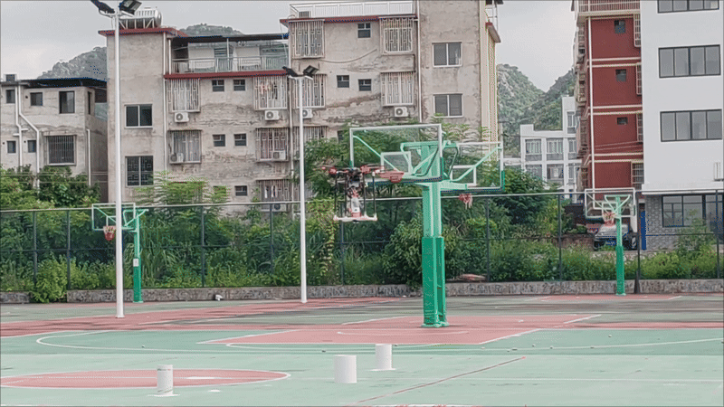

自我介绍
陈宇城，男，2003年12月出生，华中科技大学机械科学与工程学院机械设计制造及其自动化（机器人方向）本科在读，预计2026年6月毕业。已保送至上海交通大学控制科学与工程专业攻读硕士研究生，将于2026年9月入学。目前的研究方向为: 最优控制, 路径规划, 强化学习。已有一篇关于规划控制的一作论文在 RAL（IEEE Robotics and Automation Letters）在投
个人信息与教育背景
个人简介
- 出生年月：2003年12月
- 电子邮箱：Yucheng__Chen@163.com
- 联系电话：18759135762
- 英语水平：CET-6（504分）
- 个人主页：https://wangyicyc.github.io/YuchengChen.github.io
- 知乎：陈宇城
教育背景
2026.09 – 待入学 上海交通大学 · 控制科学与工程（硕士，保研）
2022.09 – 2026.06 华中科技大学（985） · 机械设计制造及其自动化（机器人方向）本科
- 加权成绩：90/100（专业前 10%）
- 核心课程：微积分（上/下）93 / 95 · 线性代数 91 · 复变函数与积分变换 93 · 理论力学 96 · 概率论与数理统计 96 · 综合英语 93
实习经历
2025.12.10 – 2026.04.10 深圳市速腾聚创科技有限公司 (Robosense) · 强化学习算法实习生
项目：网球接打小车的强化学习模型训练与部署
- 强化学习模型训练：在 Isaac Gym 训练环境下，基于 rsl_rl 库实现 PPO 算法，训练小车完成网球接打自动控制任务。
- Sim2Real Gap 研究：将模型从虚拟训练环境部署到真实物理环境并验证其在真实环境下的表现(接球成功率)。
- 仿真环境迁移：将原先基于 Isaac Gym 的仿真环境迁移到更高保真的 MujocoLab（兼顾 Mujoco 高保真与 GPU 并行计算）。
- 网球轨迹仿真器设计：独立于仿真环境自行设计网球动力学模型，并设计优化器结合真实轨迹数据优化其参数。
主要项目经历
基于强化学习(PPO)的自适应MPC控制器

项目描述：结合强化学习与模型预测控制(MPC)技术，提升无人机在复杂环境下的飞行鲁棒性，尤其针对定位信息受干扰的场景。
本人负责任务：
- 算法融合：将 Actor-Critic 网络与 MPC 控制器相结合，自适应调整 MPC 的代价函数，增强系统对环境变化的适应能力。
- 模型训练：采用 PPO 算法并使用 MLP 网络结构构建 Actor-Critic 模型进行训练。
- 可微分 MPC：采用可微分 MPC 框架，将 MPC 的优化过程纳入强化学习训练流程。
- C++ 与 Python 融合：使用 C++ 实现可微分 MPC 控制器并加入强化学习训练 (Python)，提高训练与推理效率。
风扰动下无人机目标搜索与物资投放

项目描述：室外环境下，使无人机载重（一个1.5L矿泉水瓶）在8mx80m的跑道上自主飞行，实现以下任务：
1. 无人机在指定起飞点自主起飞
2. 在距离起飞点30m远的8x5m区域内寻找白桶进行投放，白桶共三个（直径分别为30, 20,15），直径越小分值越高
3. 在距离起飞点65m远的8x5区域内侦查危险物，并远程传送数据，由参赛人员在控制台填写
4. 完成以上任务后无人机自主飞回起飞点并降落
本人负责任务：
1. 模糊PID控制器编写(C++)：通过模糊规则自适应调整PID系数，实现风扰动下无人机精准控制
2. 编写路径规划算法VFH：依据VFH算法求解当前可行点，并通过B样条曲线优化出光滑路径
3. 部署滤波算法：通过卡尔曼滤波以及低通滤波器，实现对噪声的滤除作用，使控制器平滑输出
障碍物森林中的快递无人机

项目描述：室内环境下，使无人机载重（3个100g快递盒）在10x10m的区域执行任务，具体任务如下：
1. 在起飞点自主起飞
2. 在10x8.5m的区域中寻找存在的5个标靶进行投放，投放得分由投放准确度与标靶自身权重计算，同时注意躲避该区域内的密集障碍物
3. 执行完任务2后，前往10x1.5m的长廊入口，穿越长廊抵达降落点准确降落，其中长廊中存在两个80cm宽的窄道
本人负责任务：
1. Ubuntu下编写基于ROS的飞行代码(C++)：执行障碍森林、狭窄走廊环境下避障任务及投放任务
2. 部署FAST-LIO及避障算法Ego-Planner : 无人机定位并生成可行路线，MPC控制器跟踪路径避障
3. 编写MPC控制器(C++)：依据目标点与约束条件在线计算对无人机加速度的控制，以跟踪全局路径
研究兴趣与专业技能
研究兴趣
最优控制 路径规划 强化学习
专业技能
机器人与系统
Ubuntu ROS1 ROS2
仿真平台
Gazebo Isaac Gym Mujoco
强化学习
Actor-Critic TRPO PPO SAC
最优控制
LQR MPC iLQR DDP
奖项荣誉
- 中国机器人大赛暨 ROBOCUP 机器人世界杯中国赛
- 国家二等奖（2023）
- 国家三等奖（2024）
- 国家二等奖（2023）
- 中国大学生飞行器设计创新大赛
- 个人/团队一等奖（2023）
- 个人/团队一等奖（2023）
- 奖学金
- 机缘奖学金（2023.10）
- 学优奖学金（2023.10）
- 新生学优奖学金（2023.03）
- 机缘奖学金（2023.10）